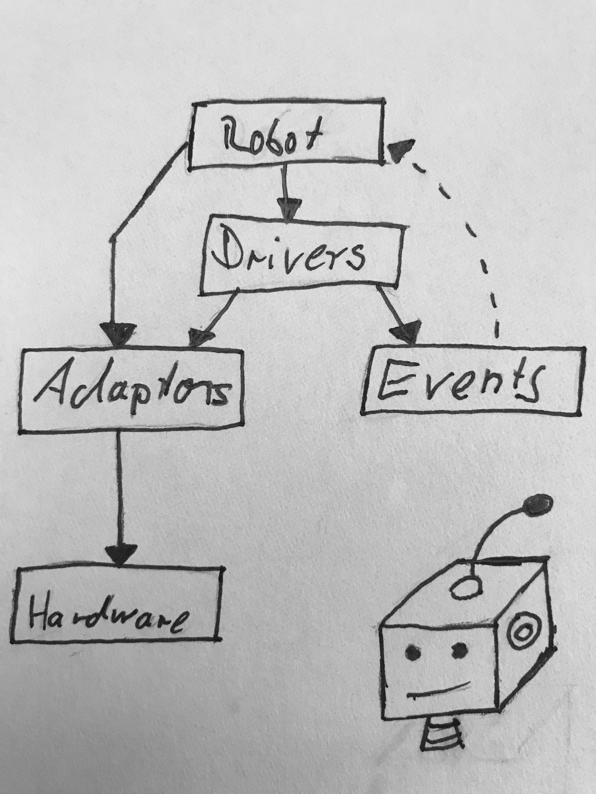
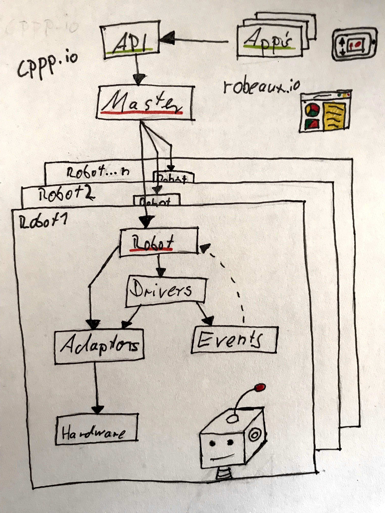
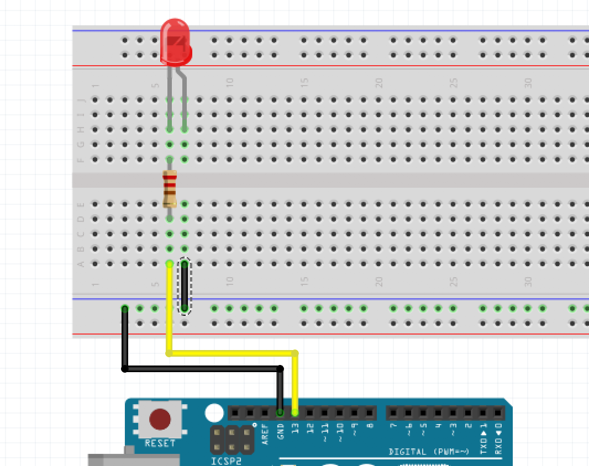
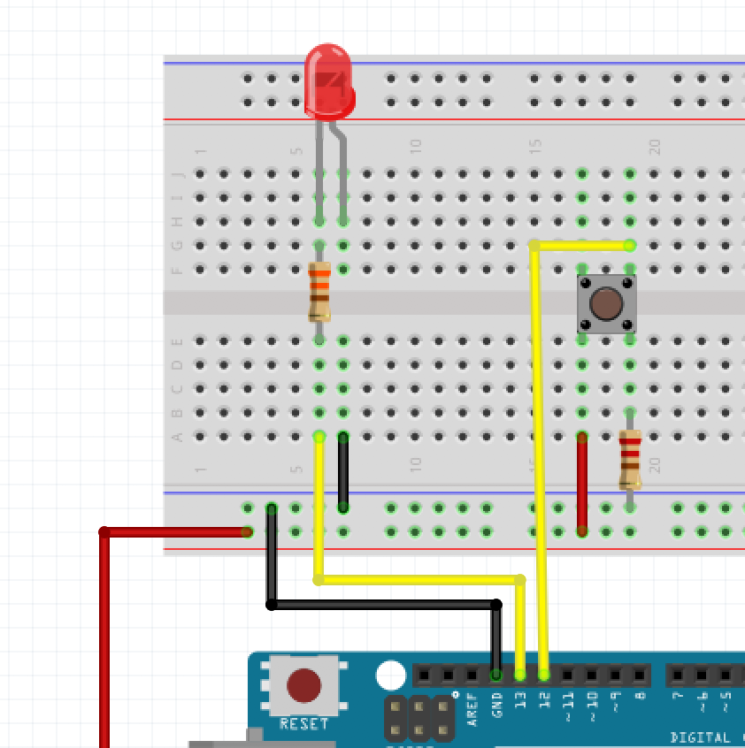

Build robots using Go
Johannes Engelke, 2018Who am I?
- Product Owner Serverless @ SAP Hybris
- Go developer
- Robot enthusiast
The go programming language
Concurrency vs. parallelism
Concurrency provides a way to structure a solution to solve a problem that may (but not necessarily) be parallelizable.https://talks.golang.org/2012/waza.slide#8
IoT and Go
- Concourrency
- Many Hardware Platforms
- Integration with C
- Efficency
Classic Gobot
Master Gobot
Metal Gobot
Hello World!
Hello World!
func main() {
adaptor := firmata.NewAdaptor("/dev/cu.usbmodem146671")
led := gpio.NewLedDriver(adaptor, "13")
work := func() {
gobot.Every(1*time.Second, func() {
led.Toggle()})
}
robot := gobot.NewRobot("bot",
[]gobot.Connection{adaptor},
[]gobot.Device{led},
work,
)
robot.Start()
}
Firmata
Hello Raspberry
...
// adaptor := firmata.NewAdaptor("/dev/cu.usbmodem146671")
adaptor := raspi.NewAdaptor()
led := gpio.NewLedDriver(adaptor, "13")
...
$ GOARM=6 GOARCH=arm GOOS=linux go build main.go
Button and Events
Button and events
adaptor := firmata.NewAdaptor("/dev/cu.usbmodem146621")
led := gpio.NewLedDriver(adaptor, "13")
button := gpio.NewButtonDriver(adaptor, "12")
work := func() {
button.On(gpio.ButtonPush, func(data interface{}) {
led.On()
})
button.On(gpio.ButtonRelease, func(data interface{}) {
led.Off()
})
}
robot := gobot.NewRobot("bot",
[]gobot.Connection{adaptor},
[]gobot.Device{led, button},
work,
)
Thank you
@quablabjohannes.engelke@sap.com
github.com/joek